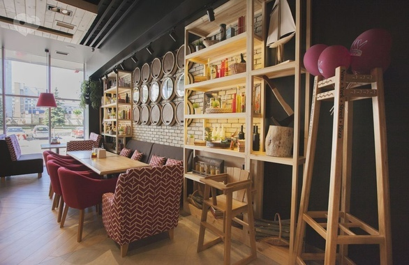
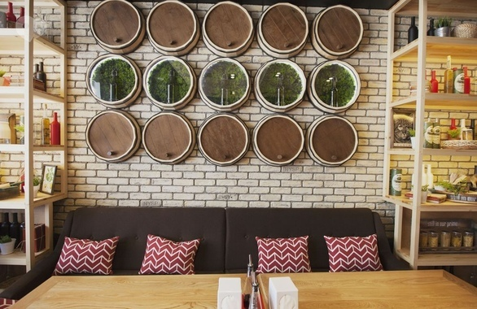

“New York Street Pizza” является частью сети ресторанов-пиццерий, которая работает в Украине уже в течение 16 лет. Сначала сеть ориентировалась на формат пиццерии, в последние годы учредители сместили акценты в сторону ресторанного формата. Черкасское заведение стало 49-м в сети по всей стране. Это небольшой уютный семейный ресторанчик, в который можно прийти и с компанией друзей, и семьей с детьми.
По замыслу создателей, “New York Street Pizza” отражает контрасты жизни в современном городе: монотонный бетон здесь соседствует с натуральной древесиной, а яркие детали придают сдержанным серым оттенкам особое настроение. Деревянные элементы, зелень и мох, яркие акценты в мебели – все детали ресторана олицетворяют разнообразное городское пространство и его многогранных жителей.
Кухня представлена классическими европейскими блюдами. В меню есть несколько видов авторской пиццы, антипасти, бургеры, блины, гриль-меню, мясные и рыбные блюда и т.д. Штатный кондитер ежедневно готовит свежие десерты из натуральных ингредиентов. Также здесь можно найти настоящие американские панкейки с яблоками, ягодным пюре, сгущенкой или шоколадной пастой.
Ароматную пиццу в “New York Street Pizza” готовят в специальной итальянской печи. В меню традиционный набор авторских пицц: “Маргарита”, “Прошутто”, “Паперони”, “Четыре сыра”, “Карбонара”. В пиццах используют два натуральных соуса – белый и красный, никакого кетчупа или майонеза. Самый дешевый вариант обойдется в 105 гривен – столько будет стоить большая “Маргарита”. Секрет вкуса пиццы кроется в специально подобранной муке и особом рецепте теста. Ингредиенты для начинок, по стандартам сети, в Черкассы привозят проверенные поставщики со Львова. Вегетарианцам предлагают пиццу без мясных продуктов, вегетарианские пироги со шпинатом, салаты и овощи-гриль.
Заведение работает с 10.00, на выбор гостям предлагают несколько вариантов завтраков: овсянка со шпинатом и яблоками, сырники, жульен, яйца пашот и т.д. Традиционная яичница с беконом или омлет с ветчиной, грибами и помидорами здесь стоит всего 26 гривен.
Для тех, кто работает недалеко от центра и нуждается в полноценном обеде, есть бизнес-ланчи по 55 гривен. Это сытный обед из первого блюда, гарнира с мясом, овощного салата и компота. Предложение по комплексным обедам действует с 11.00 до 15.00. Все четыре разновидности бизнес-ланчей всегда в наличии.
Интерьер выполнен в стиле лофт. Комфортный и легкий стиль заведения создавал молодой львовский дизайнер Юрий Глобчак. Яркие акценты и много декора создают приятную атмосферу. Детали в виде поленьев, разнообразных кухонных принадлежностей, венчиков, скалок, макарон в баночках навевают знакомый домашний уют.
Основной зал разделили на две функциональные зоны, в одной из которых располагается барная стойка и открытая пицца-печь. По замыслу дизайнера, заведение сочетает в себе гены промышленного сооружения – заливные полы, штукатурка “под бетон”, открытые конструкции, которые дополняет тепло натуральных материалов, яркая зелень и запах вкусностей.
Ресторан “New York Street Pizza” расположен на улице Смелянская, 2, напротив Налоговой инспекции. Заведение ждет вас ежедневно с 10.00 до 23.00.